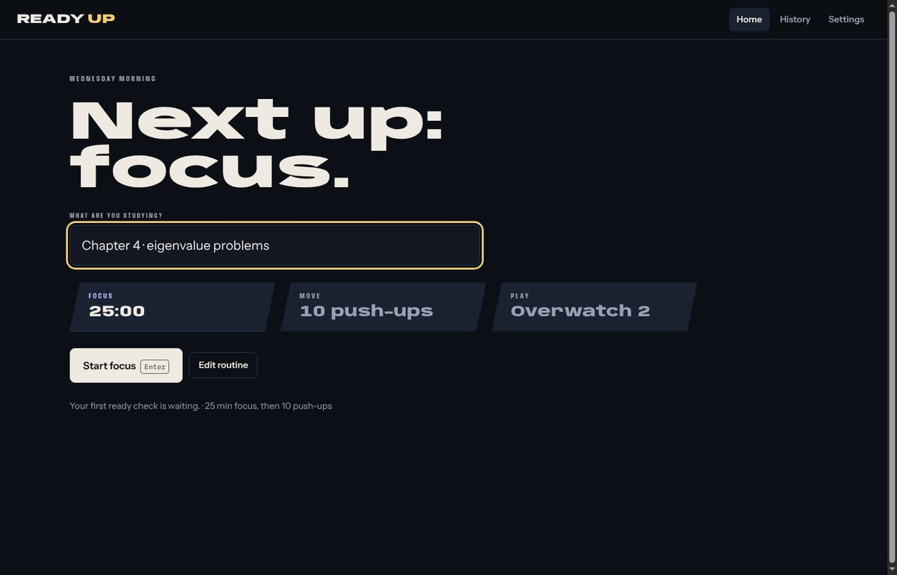
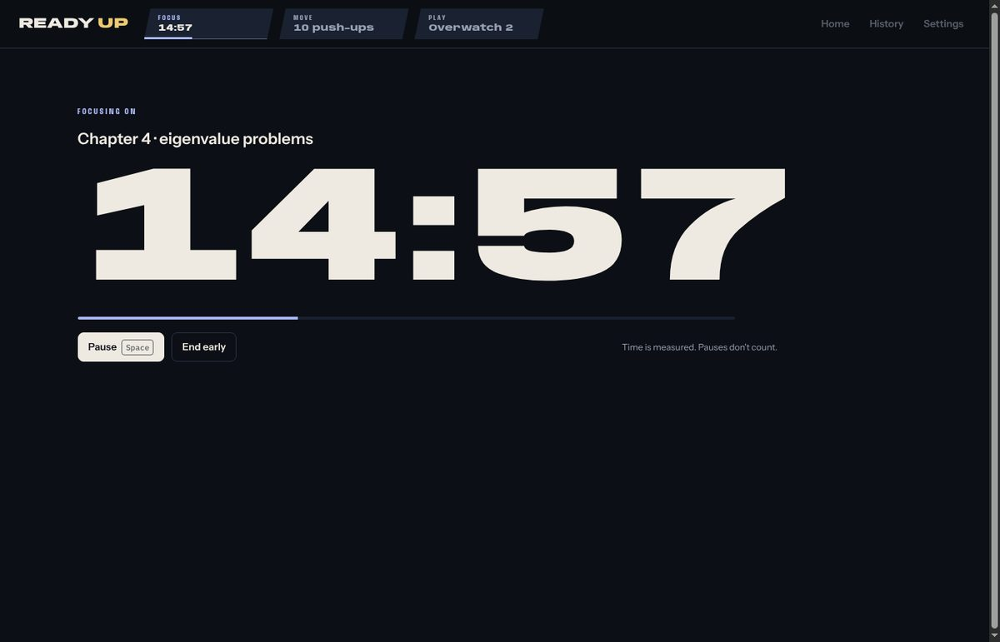
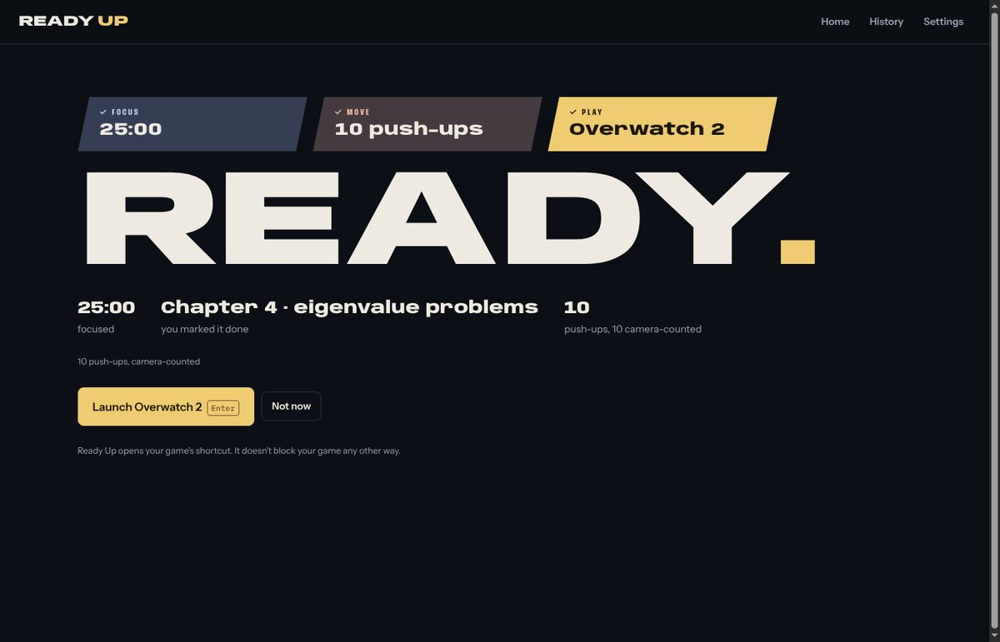
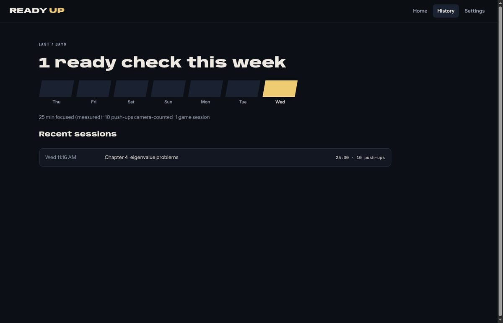

Study first
Name what you're working on and start a focus timer. 25 minutes by default, or whatever suits you. Ready Up measures the time; you say whether you finished.
18:42
Ready Up turns the moment before you play into a ready check. Focus on your study, do ten push-ups counted by your webcam, and your game's Launch button lights up.
The ready check, sped up. The real screens are below.
Get ready, be ready. Level up in game and out.
Every session is a ready check, like the one before a match. The next step is always the biggest thing on screen.
Name what you're working on and start a focus timer. 25 minutes by default, or whatever suits you. Ready Up measures the time; you say whether you finished.
Do 10 push-ups (or knee push-ups, squats or sit-ups) in front of your webcam. Ready Up follows your joints on your own computer and counts each full rep.
Your game's Launch button unlocks. Pick the shortcut you already use for Overwatch 2, Marvel Rivals, or any other game, or paste a Steam, Battle.net or Epic link, and you're in.
Screens from today's development build, captured during an automated test run with test data.




No mystery counters. Ready Up tells you what to change, in plain words, and keeps going.
Ready Up times your session and leaves out pauses. Whether you finished your task is your call, and it's recorded as your answer.
Ready Up doesn't block your game, your launcher or your desktop shortcut. It gives you one good reason to wait.
For injury, accessibility needs or a camera that won't cooperate, there's a clearly labeled override. It still unlocks your game and is noted as an override, without a guilt trip.
Ready Up records that it opened your game. It can't see your matches, so you can log those yourself if you want to.
The pose tracker runs locally. Ready Up looks at where your joints are, counts the rep, and lets the picture go.
Camera frames stay in memory and are discarded after tracking.
The app makes no network requests. It works with Wi-Fi off.
No sign-up, no email, no profile. Your history lives in a file on your PC.
No tracking, no telemetry, no ads. Logs leave only if you export them.
Checked, not just promised: the app's automated tests read Chromium's own network log and fail if Ready Up contacts any server. They also fail if any image or video file appears in the app's data folder after a session.
The app is built end to end. Rep counting now needs testing with real people and real cameras, so downloads open once that's done. Until then, you can follow every step on GitHub.
No. It unlocks its own Launch button when your ready check is complete. Your game, launcher and shortcuts keep working as usual. Ready Up is a commitment you make to yourself.
No. Frames are processed in memory on your computer and discarded. Nothing is uploaded, and the app makes no network connections at all.
Yes, if Windows lists it as a webcam. With an iPhone that means a webcam app on the phone and PC. Some Android phones can act as a USB webcam with no extra app.
Use the override and pick a reason. You can do a different exercise, enter your own count, or skip the movement for today. It's recorded as an override, and Launch still unlocks.
It's in testing. The counting logic passes a suite of simulated movements, including half reps and arm curls that must not count, but accuracy on real people is being measured now. We'll publish the results before calling it dependable.
After real-camera testing of push-ups and the core screens are done. Follow the project on GitHub to see each milestone as it lands.